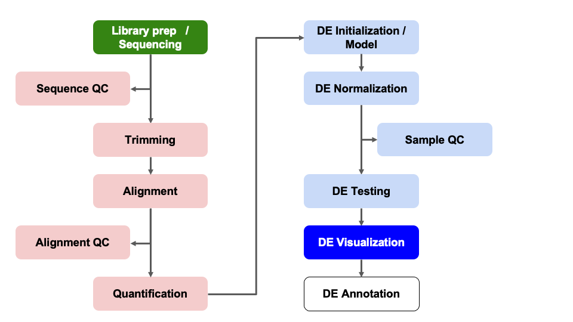

Objectives
- Understand advantages of using gene ids when analyzing RNA-seq data.
- Given a list of ENSEMBL gene ids, add gene symbols and Entrez accessions.
- Generate common visualizations for differential expression comparisons
- Understand choosing thresholds for calling differentially expressed genes
- Discuss options for functional enrichments
Here we will generate summary figures for our results and annotate our DE tables.

Since, gene symbols can change over time or be ambiguous we use, and recommend, using the EMSEMBL reference genome and ENSEMBL IDs for alignments and we’ve been working with tables and data where all genes are labeled only by their long ENSEMBL ID. However, this can make it difficult to quickly look for genes of interest.
Luckily, Bioconductor provides many tools and resources to facilitate access to genomic annotation resources.
To start, we will first load the biomaRt library and choose what reference we want to access. For a more detailed walk through of using biomaRt, this training module might be useful, including what to do when annotations are not 1:1 mappings.
We’ll start by loading the biomaRt library and calling
the useEnsembl() function to select the database we’ll use
to extract the information we need. This will download the mapping of
ENSEMBL IDs to gene symbols, enabling us to eventually add the gene
symbol column we want.
library('biomaRt')
ensembl = useEnsembl(dataset = 'mmusculus_gene_ensembl', biomart='ensembl')Note - this process takes some time and will take up a larger amount of working memory so proceed with caution if you try to run these commands on a laptop with less than 4G of memory
To identify possible filters to restrict our data,
we can use the listFilters function. To identify the
attributes we want to retrive, we can use the
listAttributes function. The best approach is to use list
or search functions to help narrow down the available options.
head(listFilters(mart = ensembl), n = 20)
head(listAttributes(ensembl), n = 30)We can access additional genomic annotations using the bioMart
package. To identify we’ll structure our ‘query’ or search of the
bioMart resources to use the ENSEMBL
id from our alignment to add the gene symbols and gene description
for each gene.
id_mapping = getBM(attributes=c('ensembl_gene_id', 'external_gene_name'),
filters = 'ensembl_gene_id',
values = row.names(assay(dds_fitted)),
mart = ensembl)
# will take some time to run
# Preview the result
head(id_mapping) ensembl_gene_id external_gene_name
1 ENSMUSG00000000001 Gnai3
2 ENSMUSG00000000028 Cdc45
3 ENSMUSG00000000031 H19
4 ENSMUSG00000000037 Scml2
5 ENSMUSG00000000049 Apoh
6 ENSMUSG00000000056 NarfNow that we have the ENSEMBL information and a gene symbol to match to our results, we can proceed in the smaller groups. As with the previous exercise, we have broken it into small steps with hints as needed.
Note: For additional information regarding bioMart, please consult the ENSEMBL bioMart vignette or the broader Bioconductor Annotation Resources vignette.
Look at the two data frames that are going to be needed:
id_mapping and results_minus_vs_plus.
head(id_mapping) ensembl_gene_id external_gene_name
1 ENSMUSG00000000001 Gnai3
2 ENSMUSG00000000028 Cdc45
3 ENSMUSG00000000031 H19
4 ENSMUSG00000000037 Scml2
5 ENSMUSG00000000049 Apoh
6 ENSMUSG00000000056 Narfhead(results_minus_vs_plus)log2 fold change (MLE): condition minus vs plus
Wald test p-value: condition minus vs plus
DataFrame with 6 rows and 7 columns
baseMean log2FoldChange lfcSE stat pvalue
<numeric> <numeric> <numeric> <numeric> <numeric>
ENSMUSG00000000001 1489.83039 0.297760 0.210310 1.415815 0.156830
ENSMUSG00000000028 1748.93544 0.226421 0.176795 1.280695 0.200301
ENSMUSG00000000031 2151.87715 0.457635 0.764579 0.598545 0.549476
ENSMUSG00000000037 24.91672 0.579130 0.561259 1.031840 0.302147
ENSMUSG00000000049 7.78377 -0.899483 1.553063 -0.579167 0.562476
ENSMUSG00000000056 19653.54030 -0.174048 0.203529 -0.855151 0.392468
padj call
<numeric> <factor>
ENSMUSG00000000001 0.868573 NS
ENSMUSG00000000028 0.902900 NS
ENSMUSG00000000031 0.995391 NS
ENSMUSG00000000037 0.950613 NS
ENSMUSG00000000049 0.998043 NS
ENSMUSG00000000056 0.982479 NSWe want to match the id column of
results_minus_vs_plus to the ensembl_gene_id
column of id_mapping, and once that match is found, we want
to extract the external_gene_name column of
id_mapping to get the gene symbol. Next, look at the
documentation for dplyr::left_join() and merge the
id_mapping table into the
results_minus_vs_plus table on the columns
ensembl_gene_id and external_gene_name.
results_minus_vs_plus_annotated = as_tibble(results_minus_vs_plus, rownames = "id") %>%
left_join(id_mapping, by = c('id' = 'ensembl_gene_id'))
head(results_minus_vs_plus_annotated)# A tibble: 6 × 9
id baseMean log2FoldChange lfcSE stat pvalue padj call external_gene_name
<chr> <dbl> <dbl> <dbl> <dbl> <dbl> <dbl> <fct> <chr>
1 ENSMUS… 1490. 0.298 0.210 1.42 0.157 0.869 NS Gnai3
2 ENSMUS… 1749. 0.226 0.177 1.28 0.200 0.903 NS Cdc45
3 ENSMUS… 2152. 0.458 0.765 0.599 0.549 0.995 NS H19
4 ENSMUS… 24.9 0.579 0.561 1.03 0.302 0.951 NS Scml2
5 ENSMUS… 7.78 -0.899 1.55 -0.579 0.562 0.998 NS Apoh
6 ENSMUS… 19654. -0.174 0.204 -0.855 0.392 0.982 NS Narf We can use some of the tidyverse functions we’ve
encountered previously to rename the external_gene_name
column to symbol and to move it into the second column
position? Hint: Because of the order of the packages we may have loaded,
we’ll use dplyr::rename() and dplyr::select()
instead of just the select() function. We can discuss this
in a moment.
results_minus_vs_plus_annotated = results_minus_vs_plus_annotated %>%
dplyr::rename('symbol' = 'external_gene_name') %>%
dplyr::select(id, symbol, everything())
results_minus_vs_plus_annotated# A tibble: 16,249 × 9
id symbol baseMean log2FoldChange lfcSE stat pvalue padj call
<chr> <chr> <dbl> <dbl> <dbl> <dbl> <dbl> <dbl> <fct>
1 ENSMUSG00000000001 Gnai3 1490. 0.298 0.210 1.42 0.157 0.869 NS
2 ENSMUSG00000000028 Cdc45 1749. 0.226 0.177 1.28 0.200 0.903 NS
3 ENSMUSG00000000031 H19 2152. 0.458 0.765 0.599 0.549 0.995 NS
4 ENSMUSG00000000037 Scml2 24.9 0.579 0.561 1.03 0.302 0.951 NS
5 ENSMUSG00000000049 Apoh 7.78 -0.899 1.55 -0.579 0.562 0.998 NS
6 ENSMUSG00000000056 Narf 19654. -0.174 0.204 -0.855 0.392 0.982 NS
7 ENSMUSG00000000078 Klf6 951. -0.145 0.222 -0.652 0.515 0.992 NS
8 ENSMUSG00000000085 Scmh1 727. 0.265 0.275 0.964 0.335 0.966 NS
9 ENSMUSG00000000088 Cox5a 1427. -0.272 0.212 -1.28 0.199 0.903 NS
10 ENSMUSG00000000093 Tbx2 15.2 0.542 0.687 0.788 0.430 0.985 NS
# ℹ 16,239 more rowsAnd now we have our differential expression results annotated with gene symbols, which can help in the interpretation of the results, and can be used in downstream analysis such as functional analysis.
A key aspect of our analysis is preserving the relevant datasets for both our records and for downstream applications, such as functional enrichments.
We’ll write out our DE results, now that we’ve added information to the table to help us or our collaborators interpret the results.
write.csv(results_minus_vs_plus,
row.names = FALSE,
na = ".",
file="outputs/tables/DE_results_minus_vs_plus.csv")In addition to the individual RObj(s) we saved earlier, we can
capture a snapshot our entire session using the save.image
function. This can be loaded in the same manner as an individual
Robj.
First, we’ll save our session info so we can reference the packages and versions used to generate these data.
session_summary <- sessionInfo()save.image(file = "outputs/Robjs/DE_iron.RData")In this section, we:
We’ve run through most of the building blocks needed to run a differential expression analysis and hopefully built up a better understanding of how differential expression comparisons work, particularly how experimental design can impact our results.
What to consider moving forward:
Let’s pause here for general questions
A way to determine possible broader biological interpretations from the observed DE results, is functional enrichments. There are many options, such as some included in this discussion thread. Other common functional enrichments approaches are gene set enrichment analysis, aka GSEA, Database for Annotation, Visualization and Integrated Discovery, aka DAVID, Ingenity, and iPathway Guide
The University of Michigan has license and support for additional tools, such as Cytoscape, so we recommend reaching out to staff with Taubman Library to learn more about resources that might be application toyour research.
sessionInfo()R version 4.2.3 (2023-03-15)
Platform: x86_64-apple-darwin17.0 (64-bit)
Running under: macOS Ventura 13.5
Matrix products: default
LAPACK: /Library/Frameworks/R.framework/Versions/4.2/Resources/lib/libRlapack.dylib
locale:
[1] en_US.UTF-8/en_US.UTF-8/en_US.UTF-8/C/en_US.UTF-8/en_US.UTF-8
attached base packages:
[1] stats4 stats graphics grDevices utils datasets methods base
other attached packages:
[1] lubridate_1.9.2 forcats_1.0.0
[3] stringr_1.5.0 purrr_1.0.1
[5] readr_2.1.4 tibble_3.2.1
[7] tidyverse_2.0.0 biomaRt_2.52.0
[9] data.table_1.14.8 RColorBrewer_1.1-3
[11] pheatmap_1.0.12 ggrepel_0.9.3
[13] dplyr_1.1.1 tidyr_1.3.0
[15] ggplot2_3.4.1 DESeq2_1.36.0
[17] SummarizedExperiment_1.26.1 Biobase_2.56.0
[19] MatrixGenerics_1.8.1 matrixStats_0.63.0
[21] GenomicRanges_1.48.0 GenomeInfoDb_1.32.4
[23] IRanges_2.30.1 S4Vectors_0.34.0
[25] BiocGenerics_0.42.0 knitr_1.42
[27] rmarkdown_2.21
loaded via a namespace (and not attached):
[1] bitops_1.0-7 bit64_4.0.5 filelock_1.0.2
[4] progress_1.2.2 httr_1.4.5 tools_4.2.3
[7] bslib_0.4.2 utf8_1.2.3 R6_2.5.1
[10] DBI_1.1.3 colorspace_2.1-0 withr_2.5.0
[13] tidyselect_1.2.0 prettyunits_1.1.1 curl_5.0.0
[16] bit_4.0.5 compiler_4.2.3 cli_3.6.1
[19] xml2_1.3.3 DelayedArray_0.22.0 labeling_0.4.2
[22] sass_0.4.5 scales_1.2.1 genefilter_1.78.0
[25] rappdirs_0.3.3 digest_0.6.31 XVector_0.36.0
[28] pkgconfig_2.0.3 htmltools_0.5.5 dbplyr_2.3.2
[31] fastmap_1.1.1 highr_0.10 rlang_1.1.0
[34] rstudioapi_0.14 RSQLite_2.3.1 jquerylib_0.1.4
[37] generics_0.1.3 farver_2.1.1 jsonlite_1.8.4
[40] BiocParallel_1.30.4 RCurl_1.98-1.9 magrittr_2.0.3
[43] GenomeInfoDbData_1.2.8 Matrix_1.5-3 Rcpp_1.0.10
[46] munsell_0.5.0 fansi_1.0.4 lifecycle_1.0.3
[49] stringi_1.7.12 yaml_2.3.7 zlibbioc_1.16.0
[52] BiocFileCache_2.4.0 grid_4.2.3 blob_1.2.4
[55] parallel_4.2.3 crayon_1.5.2 lattice_0.20-45
[58] Biostrings_2.64.1 splines_4.2.3 annotate_1.48.0
[61] hms_1.1.3 KEGGREST_1.36.3 locfit_1.5-9.7
[64] pillar_1.9.0 geneplotter_1.74.0 codetools_0.2-19
[67] XML_3.99-0.14 glue_1.6.2 evaluate_0.20
[70] tzdb_0.3.0 png_0.1-8 vctrs_0.6.1
[73] gtable_0.3.3 cachem_1.0.7 xfun_0.38
[76] xtable_1.8-4 survival_3.5-3 AnnotationDbi_1.58.0
[79] memoise_2.0.1 timechange_0.2.0 These materials have been adapted and extended from materials listed above. These are open access materials distributed under the terms of the Creative Commons Attribution license (CC BY 4.0), which permits unrestricted use, distribution, and reproduction in any medium, provided the original author and source are credited.
| Previous lesson | Top of this lesson | Next lesson |
|---|